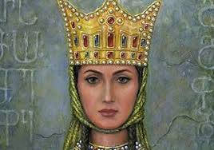

თამარ მეფე (დ. დაახ. 1160 — გ. 1213, შესაძლოა 1210 ან 1207) — საქართველოს მონარქი 1184 წლიდან, გიორგი III-ის ასული, ბაგრატიონთა სამეფო დინასტიის წარმომადგენელი. თამარს საქართველოს ოქროს ხანაში მოუწია მეფობა და უაღრესად წარმატებული მმართველი აღმოჩნდა. თამარი ატარებდა ტიტულს: „მეფეთ მეფე და დედოფალთ დედოფალი აფხაზთა, ქართველთა, რანთა, კახთა და სომეხთა, შირვანთა და შაჰანშათა და ყოვლისა აღმოსავლეთისა და დასავლეთისა თვითმფლობელობითა მპყრობელი“.
თამარ მეფე ყოველმხრივ ცდილობდა, რომ მამის, გიორგი III-ისა და დიდი პაპის,დავით IV აღმაშენებლის, პოლიტიკური კურსი განეგრძო როგორც საშინაო, ისე საგარეო საქმეებში. ამ პერიოდში თურქები უკიდურესად შევიწროებულები იყვნენ. მდგომარეობამ ისინი აიძულა გაერთიანებასა და კოალიციურ ლაშქრობაზე ეფიქრათ. მათ ,ბაღდადის ხალიფას მიმართეს და განზრახული ლაშქრობის მოწყობაში დახმარება სთხოვეს. ბაღდადის ხალიფა, ფაქტობრივად, აღმოსავლეთის მუსლიმანური რელიგიის მეთაურად თვლიდა თავს და ქრისტიანების წინააღმდეგ „მართლმორწმუნეთა დასაცავად“ ყოველთვის მზად იყო. ხალიფამ ლაშქრობისთვის დიდი თანხები გამოჰყო.
